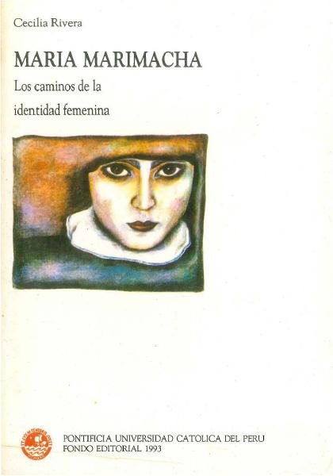

Maria marimacha : los caminos de la identidad femeninaRivera, Cecilia

Maria marimacha : los caminos de la identidad femenina
Rivera, Cecilia
María Marimacha no es sólo uno de los personajes fantásticos que pueblan nuestra imaginación. Es sin duda un modelo y una descripción del comportamiento humano al que nadie, hombre ni mujer quisiera .parecerse. Así los esfuerzos puestos en la educación de los hijos se orientan a conminar el peligro del desarrollo de una marimacho o marimacha. Pero la marimacha siempre está allí lista a aparecer si las normas que rigen las relaciones interpersonales se diluyen. Así como el trabajo femenino, también el enamoramiento y el amor ocurren en el marco de normas y principios que los encausan y dan sent
- Obtenido de
- Pontificia Universidad Católica del Perú
- Editorial
- Pontificia Universidad Católica del Perú. Fondo Editorial, 1993
- Licencia
- CC BY-NC-ND 2.5
- Tipo
- General · 116 páginas